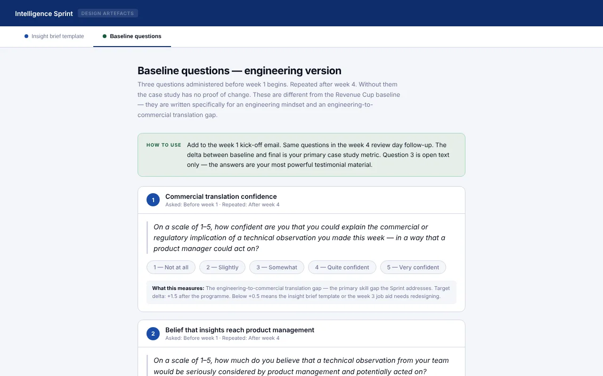

The Intelligence Sprint
A structured sprint that helps engineers turn what they see in testing into briefs product managers can act on.

The insight brief template: five sections that take an engineer from programme context to the decision they want product management to make.
The problem
Engineers see how their systems behave in real conditions long before anyone else does. That knowledge reaches product management through formal reviews that are slow, filtered and often too late to change a decision.
The engineers don't lack technical knowledge. What's missing is a way to translate an observation into something a non-specialist can evaluate, and a channel that makes it worth the effort.
“I know things about how this system behaves in real conditions that nobody else in this building knows. But I have no idea how to make that useful to the people making product decisions.”Stefan Kovač, Senior Systems Engineer (persona)
How I approached it
- Understand the audienceWhat engineers know, what product managers need, and where the two lose each other.
- Structure the sprintFour weeks: anchor, submit, add data, review with product management.
- Prototype the key toolA working insight-brief template with scoring criteria.
- Plan the measurementTwo confidence scales and one story question, before and after.
Key design decisions
A five-part template instead of free-form submissions
Without structure, submissions vary too much for product managers to compare. The template's order is deliberate: context before observation, observation before implication, implication before the ask. Product managers score every brief against the same criteria.
Open the template
A story question alongside the confidence scales
Besides two 1–5 scales, the baseline asks: “When did a technical observation last lead to a commercial decision?” Most engineers will say they can't think of one. That answer is a qualitative baseline that self-ratings can't fake.
See the baseline questions
Everything I built
Each artefact is a working page — open it and click through it as a learner or facilitator would.
Results and next steps
This is a concept project for a fictional client — fully designed, not yet delivered. These are the measures built into the design, so a real pilot would produce evidence from day one.
How I'll measure it
- Translation confidence: how confident engineers are explaining an observation in commercial terms (1–5)
- Channel belief: whether they believe insights reach product management (1–5)
- Story question: when a technical observation last changed a product decision
- Asked before the sprint and again at day 30
What success looks like
- At least one insight enters a six-week development path with product management
- Product management can compare and rank briefs using the same criteria
- Engineers can name a recent example of an observation changing a decision